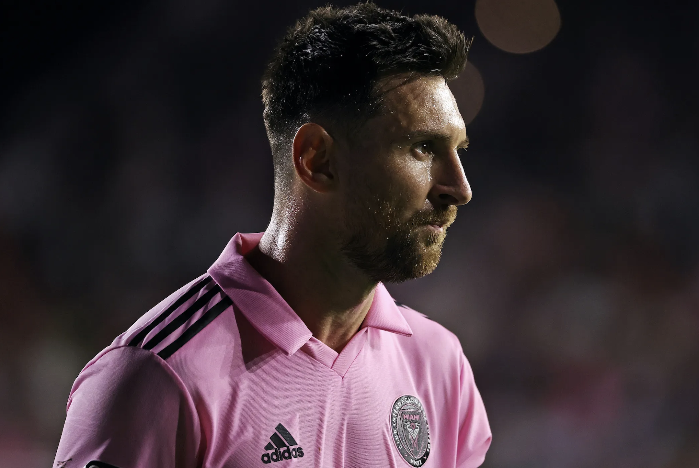

Professional Football Player.
Lionel Messi, often referred to as one of the greatest footballers of all time, was born on June 24, 1987, in Rosario, Argentina. His career has been defined by remarkable achievements and records in the world of soccer.
Messi's journey began in Rosario, where he honed his skills at a young age. He moved to Barcelona's youth academy, La Masia, at the age of 13, thanks to his impressive talents.
Messi is known for his dribbling skills, agility, vision, and incredible goal-scoring ability. He can take on multiple defenders and create scoring opportunities for himself and his teammates.
Messi's influence extends beyond the pitch. He's an inspiration to countless young footballers and has helped redefine the sport.
Endorsements and Charitable Work: Messi has several high-profile endorsements, including deals with brands like Adidas and Pepsi. He's also involved in charitable work, supporting children's healthcare and education.
Lionel Messi's legacy in football is secured as one of the greatest players in history. His contributions to both Barcelona and the Argentine national team have left an indelible mark on the sport.
Messi has a massive global fan base, with millions of followers on social media. His matches draw large audiences, and he's beloved by fans of all ages.
Messi's influence transcends the football pitch. He has played a pivotal role in redefining the sport, encouraging young talents to embrace creativity and skill in their gameplay.